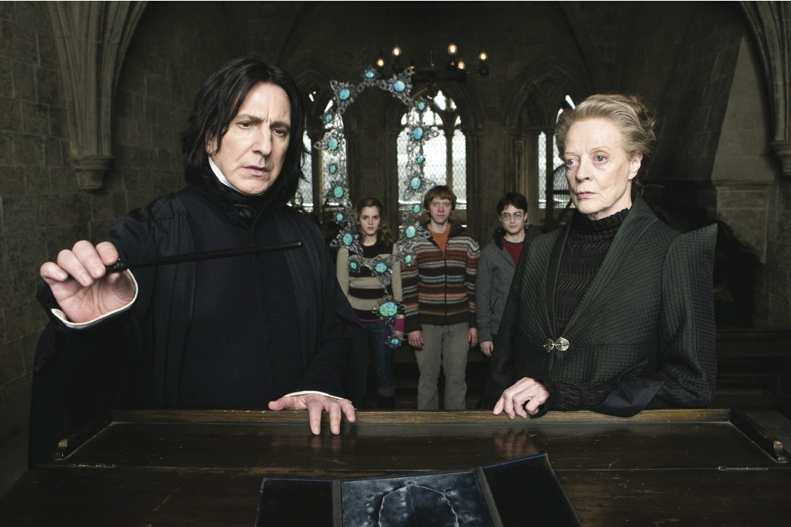

When Harry enters his sixth year at Hogwarts School of Witchcraft and Wizardry, the world is in turmoil. Voldemort's army is gaining force and momentum, and tragedies are everyday occurrences. The Muggle world is experiencing great loss and havoc as well, and fear abounds. The Prime Minister of the Muggle world meets with both the former and current Ministers of Magic, and the news is not good. It would seem that a war is at hand, and even Hogwarts isn't entirely safe.After seeing Draco Malfoy conduct sketchy business at Borgin and Burkes at the beginning of the school year (while on a school supply shopping trip with the Weasleys in Diagon Alley), Harry is convinced that Draco now works for Voldemort and is plotting something big. Harry proceeds to spend his year at Hogwarts following Draco's actions carefully. However, few believe Harry's theory that Draco has become a Death Eater.
